一、创建swing项目
1.安装WindowBuilder插件：直接在eclipse的Help->eclipse marketplace,中直接搜索内容：WindowBuilder
2.在Eclipse中创建一个JavaSwing项目
方式一：1
2创建项目 new--other--WindowBuilder--SWT Designer----SWT/JFace java Project
创建类new--other----WindowBuilder→Swing Designer→Application Window.
方式二：1
2直接创建一个Maven项目
创建类new--other----WindowBuilder→Swing Designer→Application Window.
二、将swing程序打包成jar文件
1、右键点击项目，选择“Export…”，选择java->JAR file点击Next；资源除了src其他的取消选中，然后指定jar文件保存路径，继续点Next；不需要改，点Next；选择Main class，指定开始运行的类，点击Finish结束。
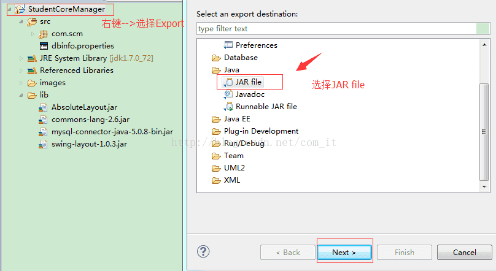
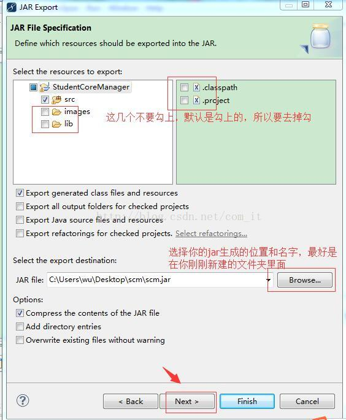
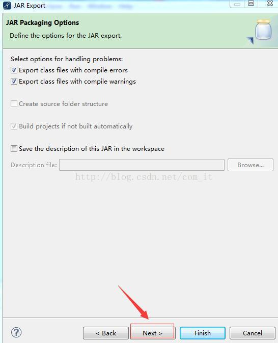
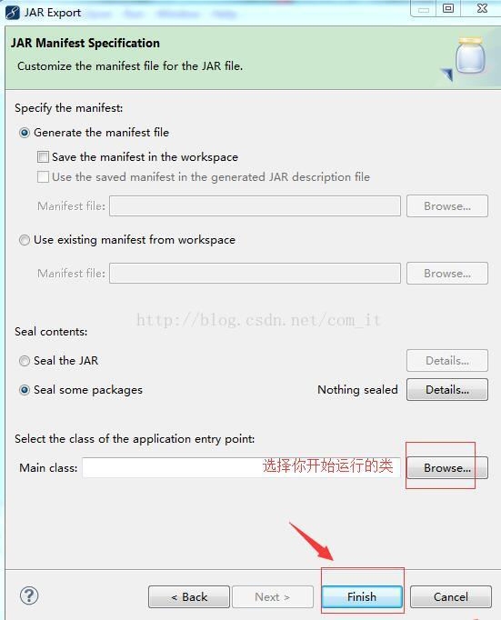
三、下载exe4j软件
注意：版本要和jdk对应好
下载地址：https://exe4j.apponic.com/
四、生成可执行文件
步骤如下图所示：
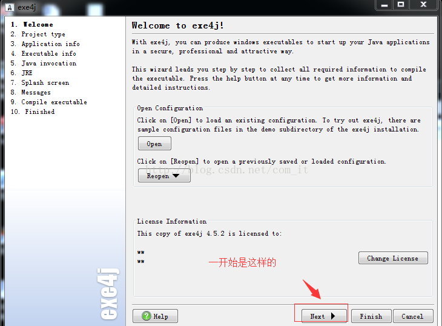
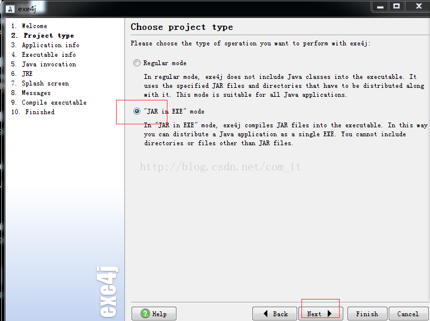
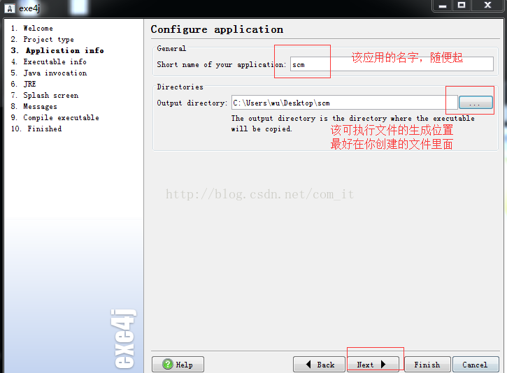
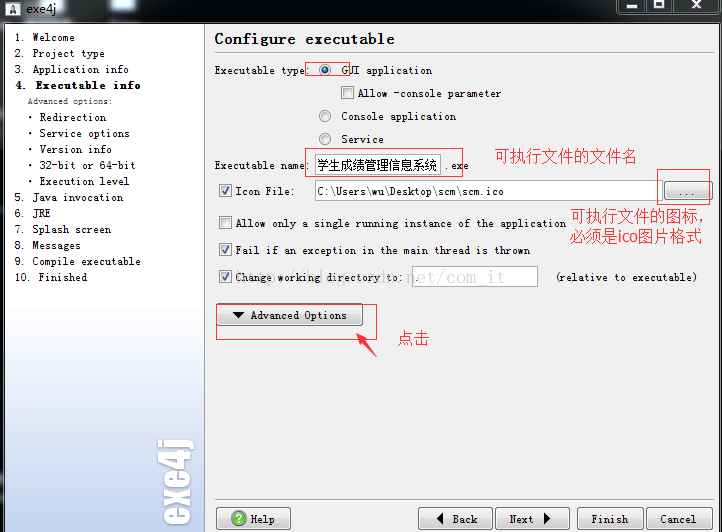
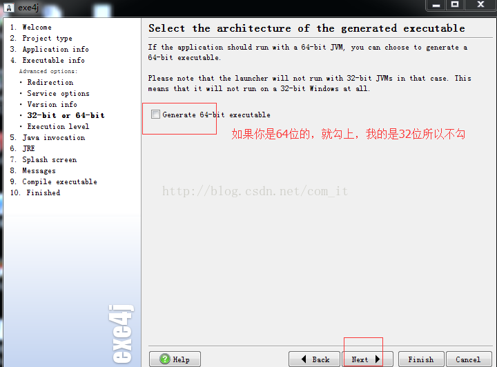
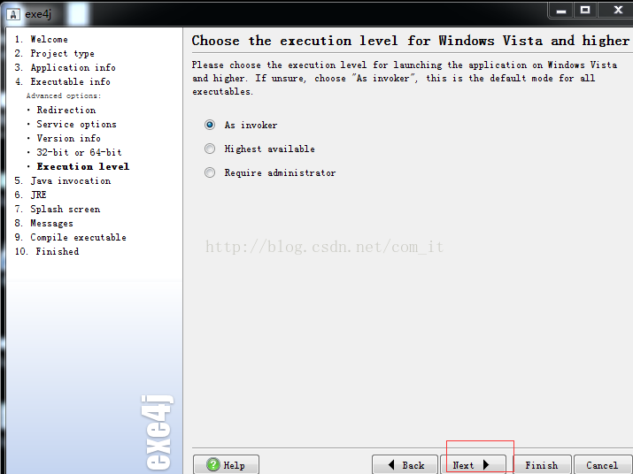
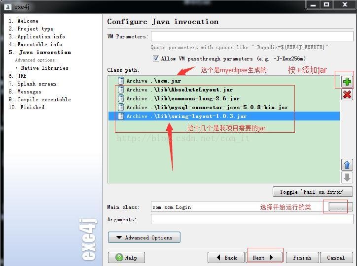
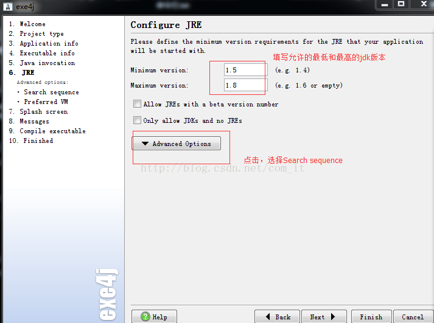
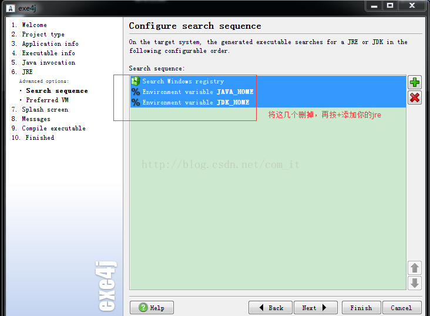
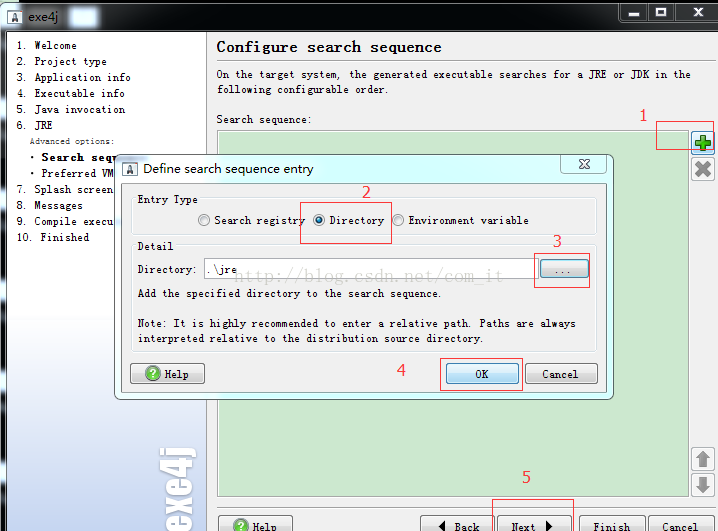
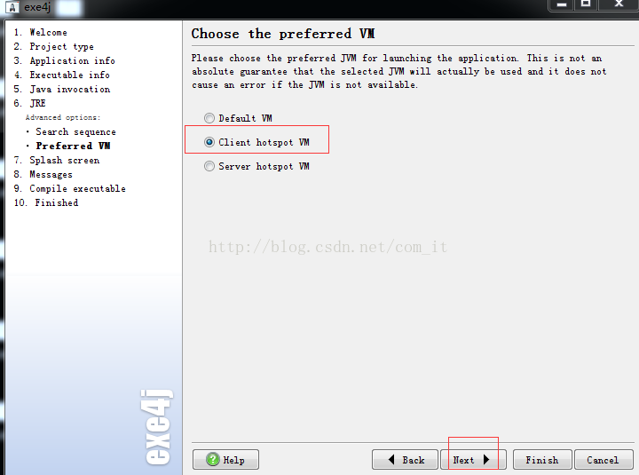
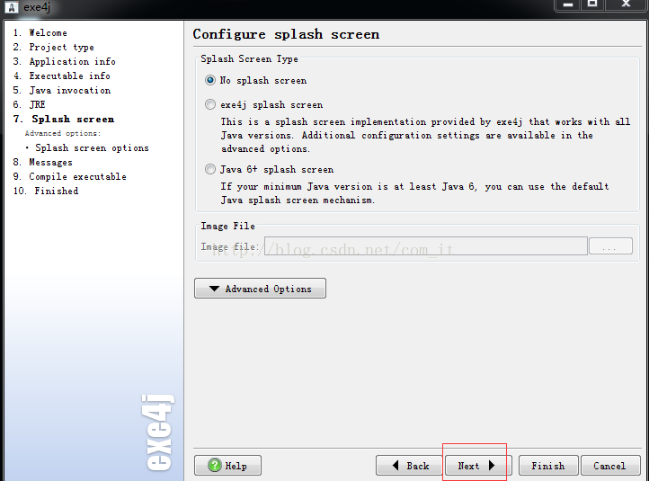
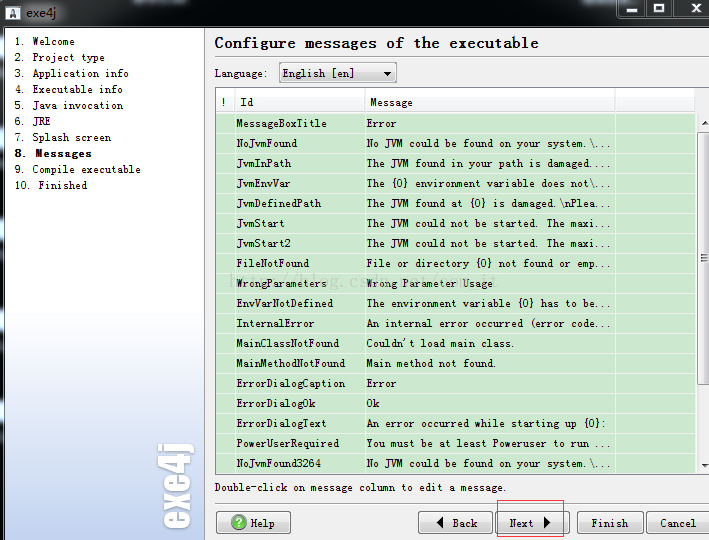
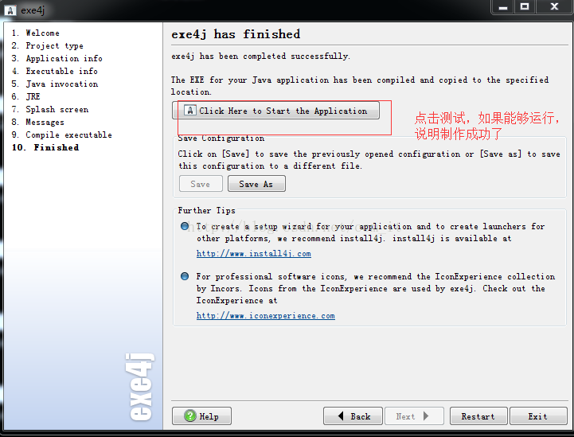